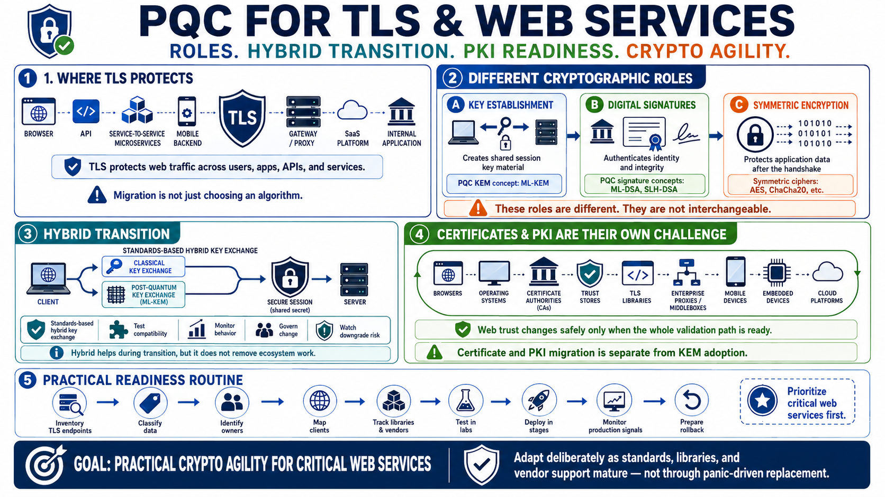

Course Summary and Key Takeaways
Connecting to LMS... Progress: in progress

Narration
PQC for TLS and web services prepares web communication for a future where some current public-key algorithms may no longer provide enough protection. TLS protects browsers, APIs, service-to-service calls, mobile backends, gateways, SaaS platforms, and internal applications. The migration challenge is not simply choosing an algorithm. It is understanding how handshake roles, certificates, clients, libraries, proxies, and operations fit together.
The most important technical distinction is between cryptographic roles. Key establishment helps create shared key material for the session. Digital signatures help authenticate identities and verify integrity. Symmetric encryption protects the application data after the handshake. Post-quantum KEMs, such as ML-KEM conceptually, relate to key establishment. Post-quantum signature algorithms, such as ML-DSA and SLH-DSA conceptually, relate to authentication and signing use cases.
Hybrid key exchange can help during the transition, but it should be standards-based, tested, monitored, and governed. It does not remove the need for compatibility work or downgrade awareness. Certificate and PKI migration is its own ecosystem challenge involving browsers, operating systems, certificate authorities, trust stores, libraries, devices, and enterprise products. Web trust changes only safely when the whole validation path is ready.
Strong readiness starts with inventory and prioritization. Find TLS endpoints, classify data, identify owners, map clients, track libraries and vendors, test in labs, deploy in stages, monitor production signals, and prepare rollback plans. The goal is not panic-driven replacement. The goal is practical crypto agility for critical web services, so organizations can adapt deliberately as standards, libraries, and vendor support mature.